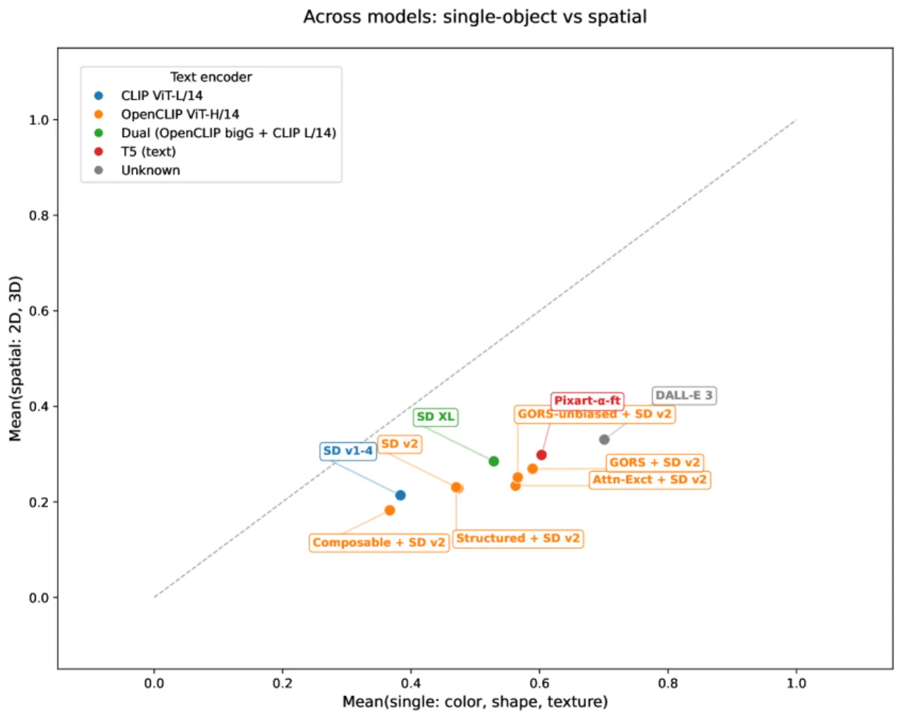
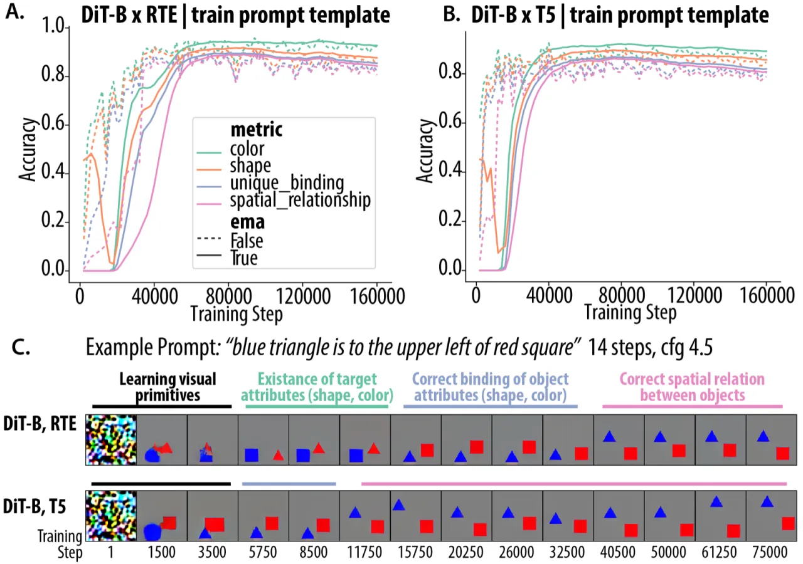
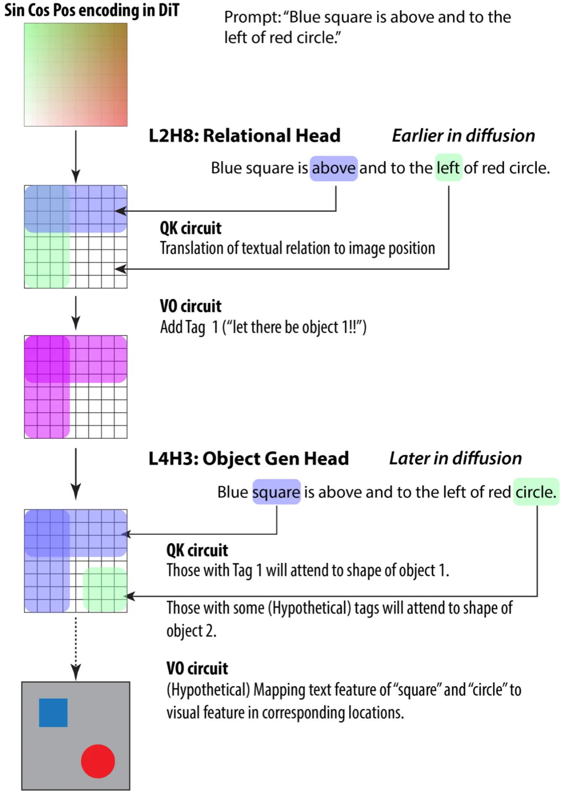
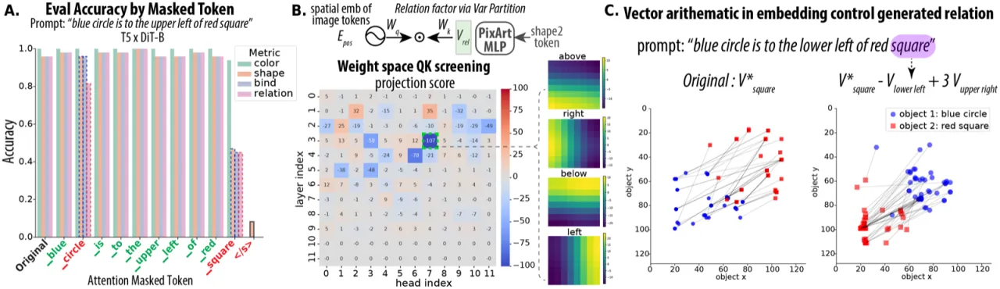
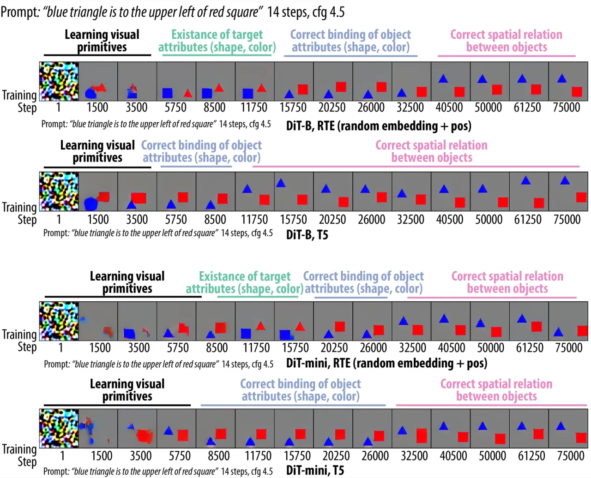
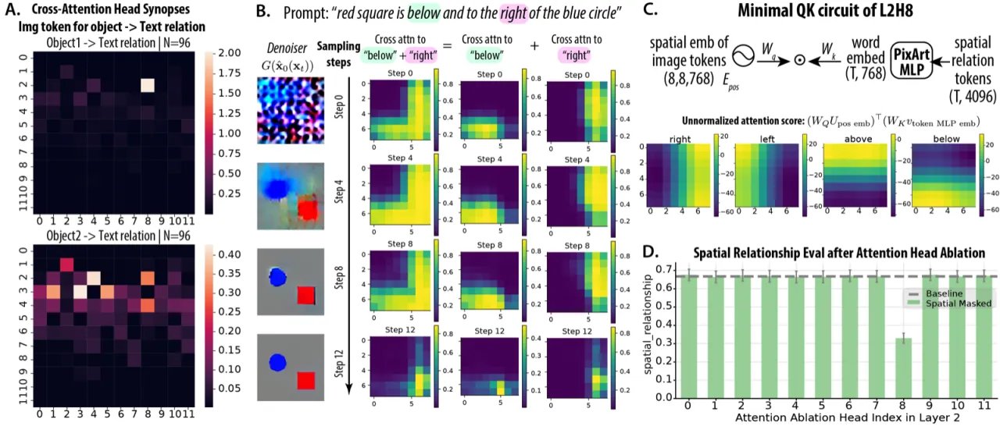

本文首次对文生图扩散 Transformer (DiT) 如何在图像中正确放置具有空间关系的物体进行了机械可解释性分析。 研究发现：文本编码器的选择从根本上决定了模型内部所形成的计算"电路"—— 使用随机 token 嵌入 (RTE) 时，模型发展出模块化的两阶段注意力电路； 使用预训练 T5 时，空间关系信息则融合进上下文 token 表示中。
文生图模型在生成单一物体属性（颜色、形状）方面已取得显著进步， 但在生成"A 在 B 的左边"这类组合空间关系时仍然频繁出错。 已有研究从两个角度归因：一是 cross-attention 机制不足，二是文本编码器的局限性。 本文提出：文本编码器的设计从根本上塑造了空间关系生成所对应的内部计算电路，从而将两种视角统一起来。
"We analyze how Diffusion Transformers (DiTs) generate correct spatial relations … and discover that the underlying mechanisms differ significantly based on text encoder choice."

空间关系（"上方"、"左侧"等）在语义上是非交换的（"A 在 B 左边" ≠ "B 在 A 左边"）， 且需要将文本语义和图像空间位置绑定在一起——这对模型来说是一个根本性挑战。 以往工作只关注现象而未揭示机制，本文通过在受控数据集上从头训练 DiT， 系统地追踪了空间关系是如何在内部被计算的。
研究采用"受控数据集 + 从头训练"的范式，配合提出的 Attention Synopsis 方法， 系统地在扩散时间步和空间 token 两个维度上定位关键注意力头，再通过消融和因果干预验证其功能。

[color A] [shape A] [relation] [color B] [shape B]，
共 8 种空间关系（left / right / above / below / upper-left / upper-right / lower-left / lower-right）。
评估集包含 96 条 prompts（8 关系 × 12 物体对）。
模型采用 PixArt-style 架构，由三部分组成：
本文提出 Attention Synopsis：对所有扩散时间步的注意力图取汇总统计， 并在所有 prompt 条件下聚合，从而识别"对特定语义变量（如 relation）有选择性响应"的注意力头。 这避免了只看单一时间步带来的偶然性，能系统筛查模型中的稀疏功能电路。


在 T5-DiT 中，空间信息并非由独立的 attention head 处理，而是通过 T5 自注意力 将 relation 信息融合进第二个物体 token 的 contextual embedding 中。 方差分解（Variance Partitioning）显示： DiT MLP 映射前，shape2 解释约 37.5% 的方差，relation 仅占 12%； 经 DiT MLP 投影后，relation 的贡献上升至 21.3%。
在受控数据集上从头训练，使用 4 项二值指标衡量生成质量： 颜色准确率、形状准确率、绑定准确率（正确的形状-颜色对应）、空间关系准确率。 评估在 96 条 prompt 上进行（8 关系 × 12 物体对）。
| 模型配置 | 形状 Shape | 颜色 Color | 绑定 Binding | 空间关系 Spatial | 严格空间 Strict |
|---|---|---|---|---|---|
| RTE-DiT | 0.877 | 0.928 | 0.855 | 0.843 | 0.758 |
| T5-DiT | 0.857 | 0.892 | 0.820 | 0.808 | 0.749 |
| CLIP-DiT-B | 0.806 | 0.900 | 0.772 | 0.759 | — |
| RTE（无位置编码） | — | — | 0.415 | 0.207 | — |
| DiT-nano（RTE） | — | — | — | 0.050 | — |
注：RTE 无位置编码时空间准确率崩溃至 20.7%，证明位置信息对空间关系生成是必要条件。 DiT-nano（3 层）空间准确率仅 5%，说明模型容量达到阈值以下时电路无法形成。
| 消融条件 | 受影响指标 | 消融前 | 消融后 | 下降幅度 |
|---|---|---|---|---|
| 移除 L2H8（空间关系头） | 空间关系准确率 | 67% | 33% | −34pp |
| 移除 L4H3（物体生成头） | 形状生成准确率 | 90% | 76% | −14pp |


将电路分析工具应用于公开预训练的 PixArt-Sigma 模型： 在所测试的物体对中，约 27% 展现出非平凡的空间关系生成能力， 同样能定位到稀疏的空间关系电路，与在受控模型上发现的机制一致。
实验仅使用 3 种形状、2 种颜色、8 种空间关系的极简数据集，背景为纯灰色、物体无纹理。 虽然这种受控设置便于机制发现，但其结论能否直接推广到真实场景的文生图模型（如复杂背景、多物体、连续颜色）尚不明确。
在预训练 PixArt-Sigma 上，仅约 27% 的物体对展示出非平凡的空间生成能力， 稀疏度更高、机制更难识别。在通用大模型中进行完整的电路逆向工程仍面临巨大挑战。
T5 contextual embedding 的空间信息高度依赖 prompt 的词语组合， 仅添加填充词 "the" 就能使空间准确率从 80.8% 跌至 49.8%（下降 31pp）。 这表明基于预训练语言模型的 T5 电路存在分布偏移脆弱性， 在面向更多样化 prompt 时泛化能力受限。
本文聚焦于"左/右/上/下"等 8 种二维空间关系， 未涉及数量关系、属性绑定以外的组合推理（如大小比较、遮挡等）。 是否存在类似的模块化电路机制需要进一步研究。
DiT-nano（3 层，3 头，192 维）的空间关系准确率仅为 5%，说明存在某个模型容量阈值。 当模型规模低于该阈值时，两阶段空间电路无法形成，空间关系学习完全失败。 具体的阈值条件尚未被系统研究。